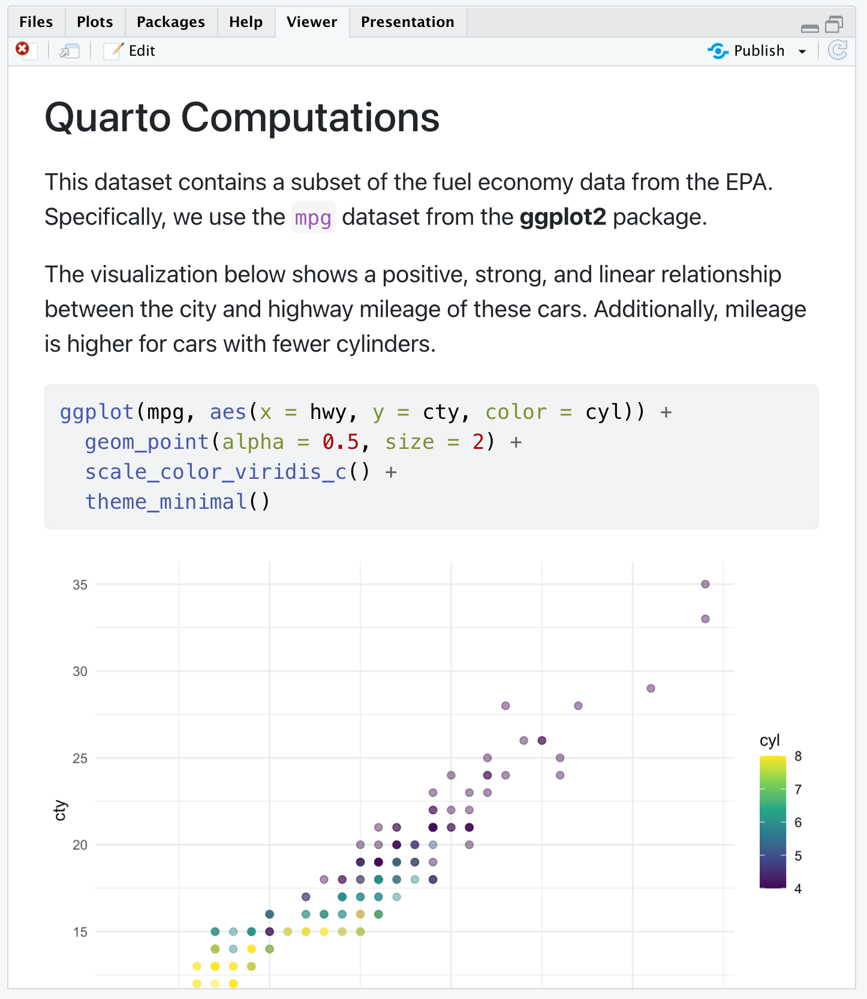

Tutorial: Computations
Overview
Quarto supports executable code blocks within markdown. This allows you to create fully reproducible documents and reports—the code required to produce your output is part of the document itself, and is automatically re-run whenever the document is rendered.
In this tutorial we’ll show you how to author fully reproducible computational documents with Quarto in RStudio.
If you would like to follow along step-by-step in your own environment, download the Quarto document (.qmd) below, open it in RStudio, and click on  Render (or use the keyboard shortcut ⇧⌘K). We recommend also checking the box for Render on Save for a live preview of your changes.
Render (or use the keyboard shortcut ⇧⌘K). We recommend also checking the box for Render on Save for a live preview of your changes.
Note that you will need to open this document in the latest release of RStudio (v2022.07) which you can download here.
Cell Output
By default, the code and its output are displayed within the rendered document.

However, for some documents, you may want to hide all of the code and just show the output. To do so, specify echo: false within the execute option in the YAML.
---
title: "Quarto Computations"
execute:
echo: false
---If you checked Render on Save earlier, just save the document after making this change for a live preview. Otherwise render the document to see your updates reflected. The result will look like the following.

You might want to selectively enable code echo for some cells. To do this add the echo: true cell option. Try this with the chunk labelled scatterplot.
#| label: scatterplot
#| echo: true
ggplot(mpg, aes(x = hwy, y = cty, color = cyl)) +
geom_point(alpha = 0.5, size = 2) +
scale_color_viridis_c() +
theme_minimal()Save the document again and note that the code is now included for the scatterplot chunk.

The echo option can be set to true, false, or fenced. The last one might be of special interest for writing documentation and teaching materials as it allows you to include the fenced code delimiter in your code output to emphasize that executable code requires that delimiter. You can read more about this option in the Fenced Echo documentation.
There a large number of other options available for cell output, for example warning for showing/hiding warnings (which can be especially helpful for package loading messages), include as a catch all for preventing any output (code or results) from being included in output, and error to prevent errors in code execution from halting the rendering of the document (and print the error in the rendered document).
See the Knitr Cell Options documentation for additional details.
Code Folding
Rather than hiding code entirely, you might want to fold it and allow readers to view it at their discretion. You can do this via the code-fold option. Remove the echo option we previously added and add the code-fold HTML format option.
---
title: "Quarto Computations"
format:
html:
code-fold: true
---Save the document again and note that new Code widgets are now included for each code chunk.
![RStudio with computations.qmd open. On the right is the visual editor. The YAML has title and format defined. Title is Quarto Computations. Format is html, and code-fold option is set to true. On the right is the rendered version of the document. The title is followed by some text, which is followed by a Code widget that would expand if clicked on, which is followed by some more text, another code widget, and finally the plot. The Code widgets are folded, so the code is not visible in the rendered document.](images/rstudio-code-fold-preview.png)
You can also provide global control over code folding. Try adding code-tools: true to the HTML format options.
---
title: "Quarto Computations"
format:
html:
code-fold: true
code-tools: true
---Save the document and you’ll see that a code menu appears at the top right of the rendered document that provides global control over showing and hiding all code.
![Rendered version of the computations.qmd document. A new code widget appears on top right of the document. The screenshot shows that the widget is clicked on, which reveals a drop down menu with three choices: Show All Code, Hide All Code, and View Source. In the background is the rendered document. The title is followed by some text, which is followed by a Code widget that would expand if clicked on, which is followed by some more text, another code widget, and finally the plot. The Code widgets are folded, so the code is not visible in the rendered document.](images/rstudio-code-tools-preview.png)
Code Linking
The code-link option enables hyper-linking of functions within code blocks to their online documentation. Try adding code-link: true to the HTML format options.
---
title: "Quarto Computations"
format:
html:
code-link: true
---Save the document and observe that the functions are now clickable hyperlinks.

Note that code linking is currently implemented only for the knitr engine via the downlit package.
Figures
We can improve the appearance and accessibility of our plot. We can change its aspect ratio by setting fig-width and fig-height, provide a fig-cap, modify its label for cross referencing, and add alternative text with fig-alt.
We’ll add the following chunk options.
#| label: fig-scatterplot
#| fig-cap: "City and highway mileage for 38 popular models of cars."
#| fig-alt: "Scatterplot of city vs. highway mileage for cars, where points are colored by the number of cylinders. The plot displays a positive, linear, and strong relationship between city and highway mileage, and mileage increases as the number cylinders decreases."
#| fig-width: 6
#| fig-height: 3.5Save the document to see the updated plot. Note that we have also updated the narrative with a cross reference to this figure using the following.
@fig-scatterplot shows a positive, strong, and linear relationship between the city and highway mileage of these cars.![RStudio with computations.qmd open. On the right is the visual editor. The YAML has title and format defined. Title is Quarto Computations. Format is html, and code-fold option is set to true. Compared to earlier images on the page, the code chunk shows the new chunk options added to the code chunk. On the right is the rendered version of the document. The title is followed by some text, which is followed by a Code widget that would expand if clicked on, which is followed by some more text, another code widget, and finally the plot. The Code widgets are folded, so the code is not visible in the rendered document.](images/rstudio-figure-options.png)
Multiple Figures
Let’s add another plot to our chunk—a scatterplot where the points are colored by engine displacement, using a different color scale. Our goal is to display these plots side-by-side (i.e., in two columns), with a descriptive subcaption for each plot. Since this will produce a wider visualization we’ll also use the column option to lay it out across the entire page rather than being constrained to the body text column.
There are quite a few changes to this chunk. To follow along, copy and paste the options outlined below into your Quarto document.
#| label: fig-mpg
#| fig-cap: "City and highway mileage for 38 popular models of cars."
#| fig-subcap:
#| - "Color by number of cylinders"
#| - "Color by engine displacement, in liters"
#| layout-ncol: 2
#| column: page
ggplot(mpg, aes(x = hwy, y = cty, color = cyl)) +
geom_point(alpha = 0.5, size = 2) +
scale_color_viridis_c() +
theme_minimal()
ggplot(mpg, aes(x = hwy, y = cty, color = displ)) +
geom_point(alpha = 0.5, size = 2) +
scale_color_viridis_c(option = "E") +
theme_minimal()Additionally, replace the existing text that describes the visualization with the following.
The plots in @fig-mpg show the relationship between city and highway mileage for 38 popular models of cars.
In @fig-mpg-1 the points are colored by the number of cylinders while in @fig-mpg-2 the points are colored by engine displacement.Then, save the document and inspect the rendered output, which should look like the following.

Let’s discuss some of the new options used here. You’ve seen fig-cap before but we’ve now added a fig-subcap option.
#| fig-cap: "City and highway mileage for 38 popular models of cars."
#| fig-subcap:
#| - "Color by number of cylinders"
#| - "Color by engine displacement, in liters"For code cells with multiple outputs adding the fig-subcap option enables us to treat them as subfigures.
We also added an option to control how multiple figures are laid out—in this case we specified side-by-side in two columns.
#| layout-ncol: 2If you have 3, 4, or more figures in a panel there are many options available for customizing their layout. See the article Figure Layout for details.
Finally, we added an option to control the span of the page that our figures occupy.
#| column: pageThis allows our figure display to span out beyond the normal body text column. See the documentation on Article Layout to learn about all of the available layout options.
Data Frames
../../computations/_knitr-df-print.mdInline Code
To include executable expressions within markdown, enclose the expression in `r `. For example, we can use inline code to state the number of observations in our data. Try adding the following markdown text to your Quarto document.
There are `r nrow(mpg)` observations in our data.
Save your document and inspect the rendered output. The expression inside the backticks has been executed and the sentence includes the actual number of observations.
There are 234 observations in our data.
If the expression you want to inline is more complex, involving many functions or a pipeline, we recommend including it in a code chunk (with echo: false) and assigning the result to an object. Then, you can call that object in your inline code.
For example, say you want to state the average city and highway mileage in your data. First, compute these values in a code chunk.
#| echo: false
mean_cty <- round(mean(mpg$cty), 2)
mean_hwy <- round(mean(mpg$hwy), 2)Then, add the following markdown text to your Quarto document.
The average city mileage of the cars in our data is `r mean_cty` and the average highway mileage is `r mean_hwy`.
Save your document and inspect the rendered output.
The average city mileage of the cars in our data is 16.86 and the average highway mileage is 23.44.
Caching
If your document includes code chunks that take too long to compute, you might want to cache the results of those chunks. You can use the cache option either at the document level using the YAML execute option.
execute:
cache: trueHowever caching all code chunks in a document may not be preferable. You can also indicate which chunks should be cached directly with using a chunk option.
#| cache: trueTry adding this chunk option to one of the code chunks in your document that produces a plot and save. When the document is rendered, you’ll see that a new folder has been created in your working directory with the same name as your document and the suffix _cache. This folder contains the cached results. You can find out more about caching in Quarto documents in the Cache documentation.
If you followed along step-by-step with this tutorial, you should now have a Quarto document that implements everything we covered. Otherwise, you can download a completed version of computations.qmd below.
_footer.md